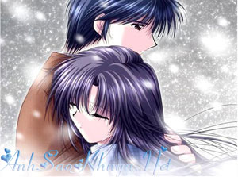

|
Có một cô gái bị mù, quen một chàng trai.Hai người cùng yêu nhau.Chàng trai vẫn luôn yêu thương và chăm sóc cô gái, dù cho cô ko nhìn thấy được.", Một hôm, cô gái nói với chàng trai rằng: - Khi nào em nhìn thấy cả thế giới, em sẽ lấy anh !!. Rồi đến một ngày kia, cô gái được phẫu thuật mắt, và cô đã nhìn thấy ánh sáng .Chàng trai hỏi cô: - Bây giờ em đã nhìn thấy thế giới, em sẽ lấy anh chứ? ", Cô gái hoàn toàn bị sốc khi thấy chàng trai cũng bị mù giống như mình.Cô đã từ chối anh. Chàng trai quay lưng bước đi, với một nụ cười: Hãy giữ gìn cẩn thận đôi mắt của mình em nhé. vì đó là món quà cuối cùng anh có thể tặng em! cầu mong em hạnh phúc ! Cô gái vui mừng trở về nhà. Nhưng rồi người thân cho cô biết đôi mắt mà cô đang dùng để nhìn cả thế giới là của chàng trai đã hi sinh cho cô. Cô ân hạn vô cùng.Nhưng không bao giờ cô được nhìn thấy chàng trai nữa. Bởi vì, chàng trai đã ko còn trên thế gian này nữa.!!! Nguồn: ASK sưu tầm || Tham gia bình luận TẠI ĐÂY ||
Bạn vô tình đọc ở đâu đó một câu chuyện tình cảm động hoặc một câu chuyện do chính bạn viết ra. Hãy đến với chúng tôi để cùng nhau chia sẻ: wWw.anhsaokhuya.net
Chung tay vì một thế giới online lành mạnh !
|